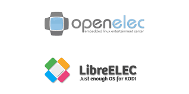

Introduccion
Linux es un sistema operativo de software libre con código abierto, que es muy estable, seguro y goza de una interfaz multiuso y multitarea. Fue diseñado para ser libre y gratuito. Es poseedor de increíbles distribuciones entre su abanico de opciones, que pueden ser usadas desde el entorno familiar, hasta el nivel empresarial. Se caracteriza por su ligereza y eficiencia en el uso de recursos limitados. Todas sus distribuciones son alternativas ideales para software de código cerrado o pago.
Mas info+
¿Qué es linux? Es un sistema operativo, y como muchos de vosotros ya sabéis, un sistema operativo es un conjunto de programas informáticos que nos permite la administración eficaz de los recursos de una computadora.
Estos programas comienzan a trabajar apenas se enciende el equipo, ya que gestiona el hardware desde los niveles más básicos y además permite la interacción con el usuario.
Para poder entender mejor este sistema operativo tendréis que imaginar a linux como un coche. Existen muchos coches de diferentes marcas pero hay algunos que sobresalen más que otros.
Una de las marcas que compite con Linux es Windows, un coche que compramos y funciona sin más. Todas las piezas que forman este coche encajan a la perfección y lo podemos utilizar para ir al trabajo, darnos una vuelta, echar unas carreras…etc.
Por otro lado tenemos MAC OS, estéticamente un coche para pijos ,que funciona perfectamente y está listo para arrancar, pero todos sus accesorios (los programas) son distintos de los que tenemos en Windows.
Estos dos coches tienen detrás un gran número de ingenieros que entienden muy bien de motores y ruedas y un gran servicio técnico.
En los años 70 muy pocas personas tenían dinero para comprarse un coche.(pagar la licencia).Solo unos pocos programadores privilegiados tenían acceso a él ya que trabajaban en centros de investigación. Richard Stallman, un estudiante del MIT era uno de esos privilegiados que podían utilizar UNIX ,un coche muy popular en aquella época.
Recordemos que en aquella época la gente normal veía una tontería comprarse un coche ya que eran muy caros y complejos de conducir y preferían ir andando a cualquier lado.
Este señor no estaba muy de acuerdo con que los coches fueran tan caros y decidió que en sus ratos libres él mismo junto a otros programadores fabricaban las piezas y las compartían entre ellos. Así, cada uno podría hacerse su coche super personalizado y potente. Así nació GNU , Open Source y la licencia GPL.
Estos estudiantes de MIT tenían ya muchas piezas de coches pero faltaba lo más importante, el motor(kernel). Cruzando el charco por europa más o menos un joven llamado Linus Torvalds un finlandes, desarrolló un motor basado en Minix (una versión de estudiantes de Unix) . Por sí solo no tenía mucho sentido pero junto a las otras piezas ya por fin podrías hacerte tu coche potente. Así fue como se creó GNU LINUX.
Mientras que los otros coches eran únicos ,este podría ser personalizado a tu antojo y lo mejor es que las piezas se podrían reutilizar ya que eran gratis.
Como podemos entender esto tiene su dificultad ya que para crear un coche necesitas saber de coches y que piezas elegir. Había personas que se dedicaban a montar los coches y compartir como lo habían hecho y que piezas habían utilizado. Así es como nacieron las DISTRIBUCIONES de Linux.
Como ya hemos estudiado este tipo de Software es libre, pero se podía comercializar dando un soporte. Si algo le pasa a tu coche habría mecánicos dispuestos las 24h a arreglarlo , eso sí , pagando por ese servicio.
Distribuciones
¿Qué es una distribución de Linux?
- Conjunto de programas compilados y listos para ejecutarse bajo el kernel de Linux
- Cada distribución selecciona y configura una serie de programas según su ámbito
Seguridad y Hacking Tools
Kali linux
- Descripcion
- Caracteristicas
- Herramientas
- dbeaver
-
Este paquete contiene DBeaver Community Edition. Es una herramienta de base de datos multiplataforma gratuita para desarrolladores, programadores de SQL, administradores de bases de datos y analistas. Admite todas las bases de datos populares: MySQL, PostgreSQL, SQLite, Oracle, DB2, SQL Server, Sybase, Teradata, Cassandra.
Tamaño de la instalación: 66,71 MB
Cómo instalar: sudo apt install dbeaver - apache2-dev
-
El objetivo del proyecto de servidor Apache HTTP es construir un servidor HTTP seguro, eficiente y extensible como software de código abierto que cumpla con los estándares. El resultado ha sido durante mucho tiempo el servidor web número uno en Internet.
Este paquete proporciona encabezados de desarrollo y el binario apxs2 para el servidor HTTP Apache 2, útil para desarrollar y vincular adiciones de terceros al paquete del servidor HTTP Apache de Debian. También proporciona complementos de secuencia dh_apache2 y dh útiles para instalar varias extensiones de Debian Apache2 con debhelper. Admite configuraciones de módulos Apache 2 y objetos compartidos Archivos de configuración del sitio Archivos de configuración global.
Tamaño instalado: 1,10 MB
Cómo instalar: sudo apt install apache2-dev - evil-ssdp
-
Esta herramienta responde a solicitudes de descubrimiento de multidifusión SSDP, haciéndose pasar por un dispositivo UPNP genérico en un red local. Su dispositivo falsificado aparecerá mágicamente en el Explorador de Windows en las máquinas de su red local. A los usuarios que tienen la tentación de abrir el dispositivo se les muestra una página web configurable.
Tamaño instalado: 100 KB
Cómo instalar: sudo apt install evil-ssdp
Kali Linux (anteriormente conocido como BackTrack Linux) es una distribución de Linux basada en Debian y de código abierto destinada a pruebas de penetración avanzadas y auditorías de seguridad. Kali Linux contiene varios cientos de herramientas destinadas a diversas tareas de seguridad de la información, como pruebas de penetración, investigación de seguridad, informática forense e ingeniería inversa. Kali Linux es una solución multiplataforma, accesible y disponible gratuitamente para profesionales y aficionados a la seguridad de la información.
Kali Linux se lanzó el 13 de marzo de 2013 como una reconstrucción completa y completa de BackTrack Linux, adhiriéndose completamente a los estándares de desarrollo de Debian. Más de 600 herramientas de prueba de penetración incluidas: después de revisar todas las herramientas que se incluyeron en BackTrack, eliminamos una gran cantidad de herramientas que simplemente no funcionaban o que duplicaban otras herramientas que brindaban la misma funcionalidad o una similar. Los detalles sobre lo que se incluye están en el sitio de Kali Tools.
Compatibilidad con una amplia variedad de dispositivos inalámbricos: un punto de conflicto habitual con las distribuciones de Linux ha sido la compatibilidad con las interfaces inalámbricas. Hemos creado Kali Linux para admitir tantos dispositivos inalámbricos como sea posible, lo que le permite ejecutarse correctamente en una amplia variedad de hardware y hacerlo compatible con numerosos dispositivos USB y otros dispositivos inalámbricos.
Paquetes y repositorios firmados por GPG: cada paquete en Kali Linux está firmado por cada desarrollador individual que lo creó y comprometió, y los repositorios posteriormente también firman los paquetes.
Mostrar
Black ArchLinux
- Descripcion
- Caracteristicas
- Herramientas
- Atlas
-
Atlas es una herramienta de código abierto que puede sugerir sabotajes de sqlmap para eludir WAF/IDS/IPS, la herramienta se basa en el código de estado devuelto.
Tamaño instalado: 134 KB
Cómo instalar: $ git clone https://github.com/m4ll0k/Atlas.git atlas
$ cd atlas
$ python atlas.py # python3+ - DarkScrape
-
OSINT Herramienta para encontrar los enlaces de medios en los sitios Tor, Descargar medios , Raspar desde una sola URL.
Reconocimiento facial, Raspar desde archivos: Txt, Csv, Excel
Tamaño instalado: 13 KB
Cómo instalar: git clone https://github.com/itsmehacker/DarkScrape.git
pip3 install -r requirements.txt
- FBHT
-
Es una herramienta destinada a testear y penetrar las vulnerabilidades de Facebook.
BlackArch Linux es una distribución de pruebas de penetración basada en Arch Linux para probadores de penetración e investigadores de seguridad. El repositorio contiene 2751 herramientas. Puede instalar herramientas individualmente o en grupos. BlackArch Linux es compatible con las instalaciones existentes de Arch.
BlackArch Full ISO contiene múltiples administradores de ventanas. El BlackArch Slim ISO presenta el entorno de escritorio XFCE. A continuación encontrará capturas de pantalla de algunos de ellos.
Mostrar
Centros multimedia
Un centro multimedia es un SI especializado en la reproducción de archivos de audio, vídeo, imágenes e incluso videojuegos o televisión, en resumidas cuentas, se centra en el consumo de contenido para el entretenimiento.
OpenELEC y LibreELEC
- Descripcion
- OpenELEC
- LibreELEC
- Diferencias entre KODI y Libre/OpenELEC
- Diferencias: LibreELEC vs OpenELEC
- OpenELEC es más complicado de instalar que LibreELEC.
- LibreELEC está mejor mantenido y actualizado.
- LibreELEC funciona muy bien en Raspberry PI.
- LibreELEC no tiene ciertos problemas de seguridad que sí ha presentado OpenELEC.
OpenELEC es una distribución de Linux conocida por ser un centro multimedia. Está diseñada para HTPCs (Home Theater Personal Computer), ordenadores cuyo único uso es la reproducción de multimedia.
OpenELEC es un sistema operativo embebido basado en Linux para el entretenimiento digital. Sus siglas provienen de Open Embedded Linux Entertainment Center. Esta distribución sigue el principio JeOS (Just Enough Operating System), que se basa en usar los recursos necesarios para su funcionamiento.
Esta distribución no proviene de otra, sino que ha sido creada de cero con Kodi integrado, algo típico entre este tipo de distribuciones, pero eso no la hace menos, ya que en 2007 incluso ganó un premio a la categoría “Estructuras Públicas” en el concurso internacional Les Trophées du libre.
Por su parte LibreELEC es una bifurcación de OpenELEC, la cuál tiene pocas diferencias con su predecesor, son un proyecto JeOS para ejecutar Kodi, su única diferencia es que LibreELEC es dirigida de forma democrática.
Al igual que OpenELEC, LibreELEC es una distro Linux totalmente gratuita y de código abierto cuya principal finalidad es permitirnos convertir cualquier PC en un completo centro multimedia. Esta es una de las distros más sencillas que podemos encontrar, ya que simplemente trae el Kernel Linux, systemd y Kodi. No trae paquetes adicionales, ni programas, ni escritorios. Solo trae Kodi.
En caso de tener que conectarnos de forma remota a nuestro centro multimedia, podemos hacerlo a través de SSH, esto nos sirve para realizar algún tipo de mantenimiento o subir archivos desde otro equipo
Aunque a grandes rasgos puede parecer «lo mismo», hay ligeras diferencias entre Kodi y estas distribuciones. Para empezar, ambas son distribuciones de Linux muy pequeñas sobre la cual se ejecuta Kodi. Sus desarrolladores optimizan el Kernel para poder instalar el Linux en los dispositivos correspondientes y nada más.
En cambio, Kodi es un programa que podemos descargar e instalarlo en cualquier ordenador con Windows, macOS, Linux, e incluso para sistemas operativos móviles y hasta para consolas.
No hay diferencia a la hora de usar Kodi en Windows o en una de las distribuciones. La diferencia no consiste en eso, sino en que mientras que uno se diseña como programa independiente, estas distribuciones dan forma a Kodi como sistema operativo.
LibreELEC es una alternativa a OpenELEC. Los usuarios lo tienen difícil para elegir la mejor. Cualquiera de ellas sería una gran elección. Sin embargo existen pequeños detalles que han puesto en cabeza a LibreELEC.
Lakka
- Descripcion
- Caracteristicas
- Tiene espacios para guardado de partidas de los juegos emulados.
- Es compatible con modo multijugador local y por Netplay de hasta 5 personas.
- Cuenta con funciones de rebobinado que permite retroceder pulsando una tecla.
- Su firmware se actualiza por medio de OTA(Over The Air), desde el menú del XMB se puede actualizar Lakka de forma sencilla.
- Ofrece una amplia variedad de shaders para poder mejorar la apariencia de algunos juegos.
- Se puede usar con prácticamente cualquier mando y se pueden configurar los botones y teclas.
- Respecto a la lista de emuladores disponibles, podrás encontrar prácticamente emuladores para cualquier juego clásico, desde el Atari 600 hasta la PSP y Nintendo 64.
- Herramientas
Lakka consiste en una distribución de Linux que está optimizada para poder realizar la emulación de videojuegos. Se trata de una distribución que tiene base en Retro Arch y que está basada en la distribución LibreELEC, de forma que los usuarios pueden cargar los emuladores de manera sencilla por medio de una interfaz XMB que resulta muy parecida a la que tenían las consolas que estaban en el mercado en la generación pasada.
Es una distribución pensada principalmente para mini-ordenadores como la Raspberry Pi.
Cada vez hay más distribuciones orientadas a videojuegos, tanto retro como actuales, pero Lakka es considerada una de las mejores gracias a la calidad con la que ha sido desarrollado.
Debido a esto Lakka se ha convertido en la distro oficial de RetroArch, es una distro muy fluida y establece que está optimizada para que los emuladores se puedan usar de una forma muy efectiva. Incluso el mapeo de controles está muy bien optimizado.
A diferencia de otros sistemas como RetroPie o Recalbox, Lakka es una distribución muy estable y fluida, optimizada con lo esencial para retro-gaming y con detalles cuidados y optimizados por completo.
Otra característica que también llama la atención es que no utiliza Emulationstation en front-end (un emulador usado en muchas distribuciones), lo que sirve para deshacerse de una gran cantidad de fallos y un mayor consumo de recursos.
Entre sus características se pueden destacar:
RetroArch
Como ha quedado confirmado, Lakka es capaz de convertir un ordenador en una consola de retrogaming con emuladores. Aparte de la típica imagen para x86, soporta Raspberry Pi 0 / W, Raspberry Pi, Raspberry Pi 2, Raspberry Pi 3, Raspberry Pi 4, I.MX6 Cubox-I, I.MX6 UDOO, I.MX6 Wandboard, Odroid XU3/4, Allwinner, Amlogic, Rockchip, Odroid Go Advance, Ambernic RG351P/M, Ambernic RG351V y Nintendo Switch. A nivel de consolas o plataformas de videojuegos es capaz de emular la vieja NES de Nintendo, Super Nintendo, Mega Drive, PlayStation, juegos de Arcade y mucho más gracias a RetroArch.
Ambito Cientifico
BioLinux
- Descripcion
- Caracteristicas
- Bio-Linux 6.0 es una estación de trabajo bioinformática completamente, potente, configurable y fácil de mantener.
- Bio-Linux ofrece más de 500 programas de bioinformática en un Ubuntu Linux 10.04 de base.
- Hay un menú gráfico para programas de bioinformática, así como fácil acceso a la documentación sobre el sistema de Bio-Linux bioinformática y datos de la muestra útil para probar los programas.
- También puede instalar los paquetes de Bio-Linux para manejar la nueva generación de tipos de datos de secuencia.
- Puede instalar Bio-Linux en su máquina, ya sea como el único sistema operativo, o como parte de una configuración de arranque dual que le permite utilizar su sistema actual y Bio-Linux en el mismo hardware.
- Bio-Linux también se ejecuta en vivo desde el DVD o una memoria USB. Este se ejecuta en la memoria de su máquina y no implica tener que instalar nada.
- Esta es una manera de probar Bio-Linux, demostrar o enseñar con ella, o para trabajar con usted cuando está en movimiento.
- Bio-Linux se basa en sistemas de código abierto y software libre, y por lo tanto es libre de instalar y utilizar.
- Puede instalar los paquetes de software en un sistema preexistente de Debian o Ubuntu.
- Puede configurar el sistema en varias configuraciones, dependiendo de sus necesidades.
- Herramientas
- Mesquite
- Mesquite es un software modular y extensible para biología evolutiva, diseñado para ayudar a los biólogos a organizar y analizar datos comparativos sobre organismos. Su énfasis está en el análisis filogenético, pero algunos de sus módulos se refieren a la genética de poblaciones, mientras que otros hacen análisis multivariados no filogenéticos. Debido a que es modular, los análisis disponibles dependen de los módulos instalados.
- SplitsTree
- SplitsTree es una aplicación ampliamente utilizada para calcular redes filogenéticas no arraigadas a partir de datos de secuencias moleculares. Dada una alineación de secuencias, una matriz de distancias o un conjunto de árboles, el programa calculará un árbol filogenético o una red utilizando métodos como descomposición dividida, red vecina, red de consenso, métodos de superredes o métodos para computar redes de hibridación o recombinación simple.
Bio-Linux es una distribución GNU/Linux, que se caracteriza por ofrecer de serie una gran cantidad de software diseñado para el procesamiento de datos científicos, especialmente en el campo de la biología.
Es una potente y excelente plataforma bioinformática libre. Se puede instalar sobre una estación de trabajo, un portátil ,un servidor o sobre una máquina virtual.
La versión 8 del producto añade más de 250 paquetes de bioinformática sobre una sistema basado en Ubuntu Linux 14.04 LTS. Incluye más de 50 programas con entorno gráfico y cientos de herramientas de línea de comandos. La herramienta «Galaxy» viene incorporada con ésta nueva versión.
Mostrar
Poseidon Linux
- Descripcion
- Caracteristicas
- Herramientas
Poseidón es una distribución GNU/Linux para uso académico, científico y educativo, influenciada por el Quantian Linux, antes basada en Kurumin Linux y actualmente en Ubuntu. Es desarrollada y mantenida por un equipo de jóvenes científicos de la Universidade Federal do Rio Grande y del Instituto MARUM, en Alemania.
Contiene muchos programas de software libre, enteramente gratuitos, usado por estudiantes y científicos, tal como el lenguaje de programación Fortran, Kile y Lyx para procesar textos científicos, programas de cálculo numérico, visualización 2D/3D/4D, estadística, y varias herramientas de GIS, mapeo, bioinformática y utilitarios cotidianos como LibreOffice, Mozilla Firefox, paquetes para multimedia, etc.
Debido a su gran aceptación de la comunidad científica de idioma portugués, el proyecto cambió la base a Ubuntu, y ahora viene en un live-DVD donde se pueden elegir uno de varios idiomas para instalarlo, incluso Español, Inglés, Alemán, Francés, Portugués, Griego, Italiano, etc.
Una versión 2.5 fue desarrollada para uso interno antes del lanzamiento de la versión 3.0, inicio de la era con base Ubuntu y ambiente Gnome.
La versión actual es la 4.0 y está basada en el Ubuntu 10.04 con soporte de largo plazo (LTS) de 32 bits y (en breve) de 64 bits. Como se busca la estabilidad y la seguridad a largo plazo, para uso en universidades, institutos y escuelas, el equipo prefiere la versión con soporte de 3 años por parte de Ubuntu-Canonical.
Las actualizaciones de seguridad y de paquetes individuales, que se hacen periódicamente en el Ubuntu, se aplican directamente a Poseidon, por lo que el sistema se mantiene actualizado y funcional, siempre.
Batimetría, Mapeo del Fondo Marino, GIS y Visualización 3D.
Contiene varios programas de software libre usado por científicos y estudiantes, tal como el lenguaje de programación Fortran, Kile y Lyx para procesar textos científicos, programas de cálculo numérico, visualización 2D/3D/4D, estadística, y varias herramientas de GIS, mapeo, bioinformática y utilitarios cotidianos como OpenOffice.org, incluyendo también programas de multimedia y hasta juegos.